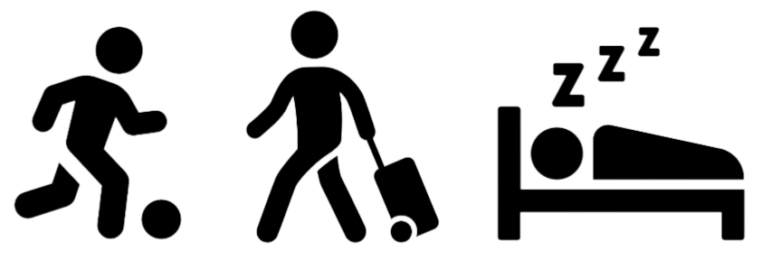
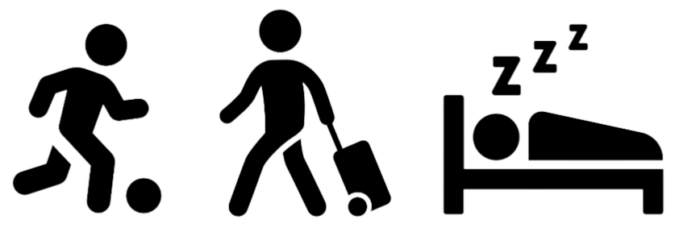
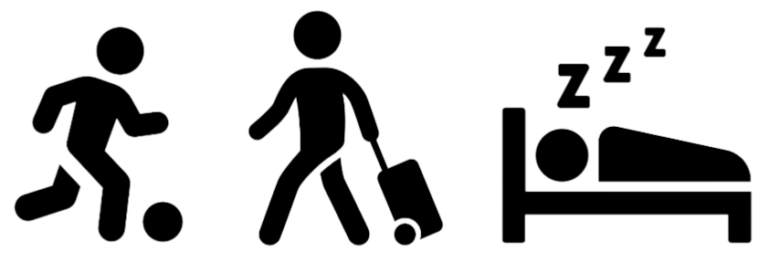
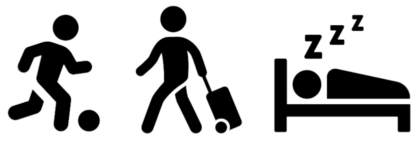

American Time Usage
in the Era of the COVID-19 Pandemic
 



Overall, the relationship between income and hours worked is pretty flat — with actually the highest and lowest income earners working the most hours. As can be seen by the visualization above, the average number of hours worked are quite consistent over the last two decades, including during the 2020 pandemic.
Younger people spend more time on sleep and personal care, with the median being between 10 and 12 hours per day. These age disparities really flatten out after the age of 20. Roughly 40% of people in the older age demographics spend an average of 8 to 10 hours on sleep and personal care.